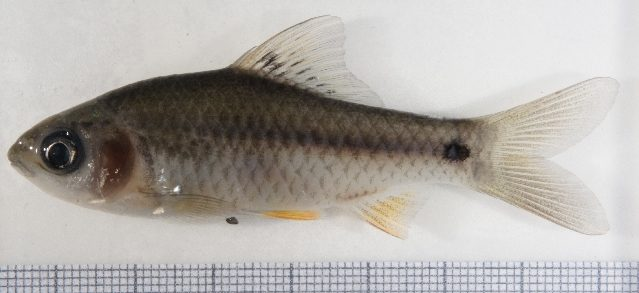

चोला पुठियाChola Barb
Puntius chola · Cyprinidae · FSH-0037

- Scientific name वैज्ञानिक नाम
- Puntius chola (Hamilton, 1822)
- Family कुल
- Cyprinidae
- Hindi हिंदी
- चोला पुठिया
- Local names स्थानीय नाम
- chola puthia, puthia, pothi, chola barb
- Status here यहाँ की स्थिति
- native
- Movement आवागमन
- Resident, here all year
- Known from कहाँ दर्ज
- Others have published records from the wider Awadh–Purvanchal plain, none yet from Basti–Ayodhya अवध–पूर्वांचल से दूसरों के प्रकाशित अभिलेख, बस्ती–अयोध्या से अभी नहीं
- IUCN IUCN
- LC
- Review समीक्षा
- audited and independently read
When to look कब देखें
Present all year. साल भर मौजूद।
Uses and possibilities उपयोग और संभावनाएँ
Drawn from the documented uses in the profile below, where each is labelled traditional, current or a research lead. All uses →
Tell it apart from इनसे अलग पहचानें
चोला पुठिया / Chola Barb
Puntius chola (Hamilton, 1822) — Cyprinidae
चोला पुठिया — छोटी, हरे-भरे रंग की कार्प, जो तालाबों और नदियों में रहती है। अक्सर झुंड में देखी जाती है। खाने के लिए अच्छी मछली है, लेकिन बहुत छोटी होती है।
Quick Identification त्वरित पहचान
| Feature | Description |
|---|---|
| Size | 8–12 cm |
| Body | Moderately compressed; scaled, smooth |
| Head | Small, rounded; terminal mouth |
| Colour | Silvery-green above; silvery-white below |
| Markings | Dark spot at base of tail; no lateral stripe |
| Fins | Dorsal and anal fins tinged orange or red (breeding males) |
| Barbels | 2 small maxillary barbels |
Field tip: A small barb found in schools in rivers, ponds, and rice paddies. Feeds by grazing on algae and detritus on the substrate. Often the most abundant small fish in local water bodies. Males develop reddish fins and darker coloration during breeding season (monsoon).
हिंदी: छोटी, सुंदर मछली। झुंड में रहती है। पानी की घास खाती है।
Morphology आकारिकी
Biometrics (field populations):
| Measurement | Range |
|---|---|
| Standard length | 80–120 mm |
| Weight | 4–15 g |
| Dorsal fin rays | 12–13 |
| Anal fin rays | 11–13 |
| Lateral line scales | 39–41 |
| Gill rakers | 18–21 |
Body: Moderately laterally compressed; deepest at the middle. Scales smooth, arranged in regular rows. Anterior profile smoothly rounded.
Head: Small, rounded. Eyes moderate-sized, positioned laterally. Mouth small, terminal, suited to grazing. Two small maxillary barbels.
Coloration: Silvery-green or greenish-olive above; silvery-white or pale below. Flanks silvery with faint longitudinal stripes. A characteristic dark spot (ocellus) at the base of the caudal peduncle. Fins pale or translucent; in breeding males, dorsal and anal fins become orange-red; body darkens and becomes more silvery.
Fins: Dorsal fin with 12–13 rays; anterior rays unbranched. Anal fin with 11–13 rays. Pectoral and ventral fins pale. Caudal fin slightly forked or rounded.
Barbels: Two small maxillary barbels; sometimes a minute nasal pair.
हिंदी: छोटी, हरी-भरी मछली। पूँछ के पास काला धब्बा। नर नारंगी रंग का हो जाता है।
Behaviour & Ecology व्यवहार और पारिस्थितिकता
Schooling. Chola Barbs are highly gregarious, forming schools that can number hundreds of individuals in productive water bodies. Schools exhibit coordinated movement and feeding behaviour.
Benthic grazer. Feeds primarily by grazing on algae and organic detritus from substrates. Mouth structure is adapted for this feeding mode. Also consumes zooplankton and small invertebrates.
Habitat preference: Adaptable to a wide range of freshwater habitats. Tolerates turbid water, moderate pollution, and variable water levels. Thrives in rice paddies and other highly human-modified ecosystems.
Diurnal activity: Primarily diurnal (active during the day); most feeding occurs in early morning and late afternoon.
Reproduction: Spawns during monsoon when water levels rise and temperature increases. Males establish territories and develop intense coloration to attract females.
Predators: Small snakeheads, cormorants, kingfishers, and humans.
हिंदी: झुंड में रहता है। दिन में सक्रिय। शैवाल खाता है।
Life Cycle / Phenology जीवन चक्र
| Stage / Season | Event |
|---|---|
| Pre-monsoon (April–May) | Maturation of gonads; coloration intensifies in males |
| Monsoon (June–August) | Spawning in weed beds and shallow areas; larval development |
| Post-monsoon (September–October) | Growth of juveniles; recovery of habitat |
| Winter (November–February) | Slow growth; aggregation in deeper pools |
| Summer (March–May) | Pre-breeding activity; movement to shallow areas |
| Sexual maturity | 1–2 years |
| Lifespan | 4–6 years |
हिंदी: बरसात में अंडे देता है। जल्दी बड़ा हो जाता है।
Host Plants or Prey आहार
- Algae (green, diatoms)
- Organic detritus
- Zooplankton
- Small aquatic insect larvae
Predators / Natural Enemies शत्रु
- Fish: Small snakeheads (Channa species)
- Birds: Cormorant, heron, kingfisher
- Humans: Extensively netted and trapped
Agricultural / Human Relevance कृषि प्रासंगिकता
Food fish. An important food fish despite its small size. Sold fresh in local markets, particularly during and after monsoon. Often caught in bulk using small nets in ponds and rice paddies.
Fishing methods. Caught using:
- Small cast nets and hand nets
- Bamboo traps
- Gill nets with small mesh
Ecological role. By grazing algae and detritus, Chola Barbs help maintain water quality in ponds and rice paddies. In rice paddies, they are sometimes stocked deliberately to provide this service.
Nutritional value. Protein-rich; eaten fresh, dried, or smoked.
Today. Abundant in suitable habitats; populations appear stable.
Research direction (a lead, not a result). The role of Chola Barbs in rice-paddy ecology and the optimization of their culture in shallow ponds for supplementary income have not been systematically studied locally.
हिंदी: अच्छी खाई जाने वाली छोटी मछली। तालाबों में बहुत रहती है। पानी को साफ़ रखती है।
Expected Locally स्थानीय रूप से अपेक्षित
Not a field record. Written from published accounts for eastern Uttar Pradesh. No confirmed local sighting yet — if you have seen it, that is what the atlas needs.
अभी तक स्थानीय पुष्टि नहीं। यह विवरण प्रकाशित स्रोतों से है, किसी अवलोकन से नहीं।
This species is NOT a field record. The distribution below is based on published sources describing where Chola Barb should be looked for in the Basti–Ayodhya region.
To be expected in ponds, tanks, river systems, and rice paddies throughout the region. One of the most abundant small fish; easily caught with small nets. Likely present in any permanent water body. A net catch is a confirmed record.
Distribution वितरण
Global range: South Asia, native to the Gangetic region and throughout the Indo-Gangetic plains. Found from Afghanistan to Bangladesh.
In India: Widespread in peninsular and northern India in freshwater habitats.
In Uttar Pradesh: Common in rivers, ponds, and rice paddies throughout.
In Basti / eastern UP: Expected in the Ghaghra, Rapti, and their tributaries; abundant in ponds and rice paddies throughout the region.
Research Questions शोध प्रश्न
- What is the population density of Chola Barbs in different habitats (river, pond, rice paddy)?
- How does growth rate vary with temperature and food availability?
- क्या चोला पुठिया का शैवाल नियंत्रण करने की क्षमता विभिन्न जलाशयों में अलग है? (Does algae-control ability vary by water body?)
- What is the fecundity and sex ratio in wild populations?
- Can Chola Barbs be cultured in shallow ponds for supplementary income? (Controlled stocking and yield studies.)
- भारत में छोटी मछलियों की खपत पोषण सुरक्षा में क्या भूमिका निभाती है? (What role do small fish play in food security?)
Similar Species मिलती-जुलती प्रजातियाँ
| Species | How to tell apart | हिंदी |
|---|---|---|
| Rosy Barb (Puntius conchonius) | Slightly larger (10–13 cm); rosy coloration; red fins in both sexes | लाल पुठिया |
| Spot-fin Swamp Barb (Puntius sophore) | Smaller (5–7 cm); dark lateral stripe; spot on dorsal fin | छोटी, पीली |
| Indian Glass Fish (Parambassis ranga) | Transparent, silvery; different mouth and body shape; much smaller | चंदा, पारदर्शी |
Field rule: A small barb (8–12 cm) with a dark spot at the base of the tail, found in schools in ponds and rivers, is a Chola Barb.
Taxonomy & Classification वर्गीकरण
Original description. Described by Hamilton in 1822 in Fishes of the Ganges as Cyprinus chola. Later transferred to Puntius by contemporary workers.
Subspecies. Monotypic — P. chola is the only recognised subspecies.
Family and order placement. Order Cypriniformes; family Cyprinidae (carp and minnow family). The genus Puntius contains over 40 species of small Asian barbs.
Phylogenetic notes. P. chola is closely related to other Asian Puntius species, particularly P. conchonius (Rosy Barb) and P. sophore.
IUCN status rationale. Least Concern globally. Widespread, abundant, and adaptable. No major threats in the core of its range.
Photo Gallery फोटो गैलरी
No photos yet — add field photos to media/species/chola_barb/ and run node scripts/sync_photos.js.
Wanted photos:
- School of fish (झुंड)
- Dorsal view showing coloration and tail spot (पूँछ का धब्बा)
- Breeding male (नर, नारंगी रंग)
- Feeding on algae (शैवाल खाते हुए)
- In rice paddy habitat (धान के खेत में)
References संदर्भ
- Hamilton, F. (1822). An Account of the Fishes Found in the River Ganges and Its Branches. Edinburgh.
- Talwar, P.K. & Jhingran, A.G. (1991). Inland Fishes of India and Adjacent Countries, vol. 1. Balkema. Pp. 245–247.
- Day, F. (1878). The Fishes of India, vol. 1. Williams and Norgate, London.
- Hora, S.L. & Pillay, T.V.R. (1962). Handbook of Fish Culture in the Indo-Pacific Region. FAO Fisheries Biology Technical Paper no. 14.
- Sarkar, U.K., Pathak, A.K., Srivastava, S.M. & Pandey, A. (2006). Fish diversity in the Ganges river system. Environmental Biology of Fishes, 76: 121–132.
- GBIF Occurrence Data — Puntius chola, India.
Source file: species/fauna/fish/chola_barb.md